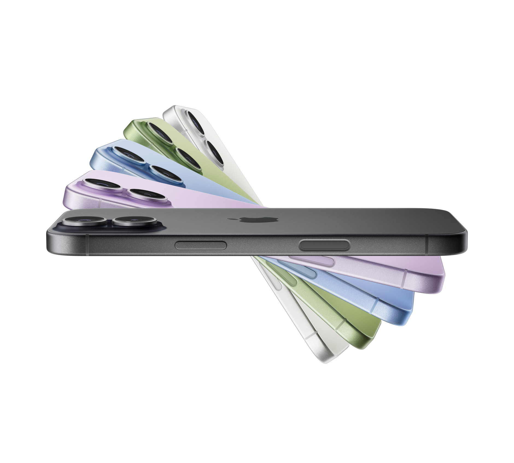
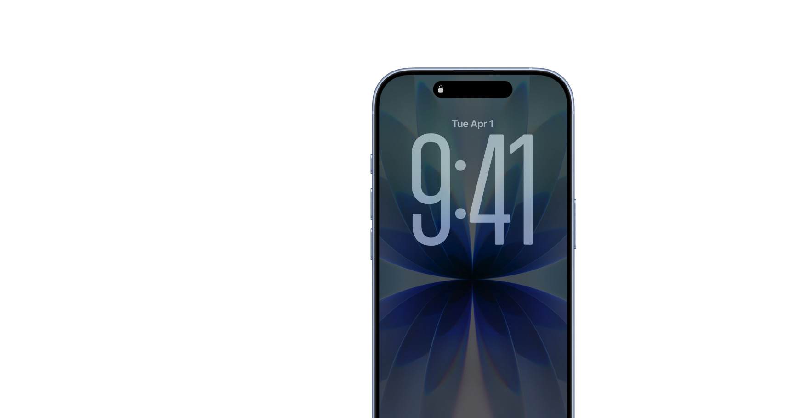

120Hz
显示屏
滚动更流畅。
阳光下也清晰。
6.3 英寸 Super Retina XDR，ProMotion 自适应刷新率最高达 120Hz。
了解显示屏 ↗全新视角 · iPhone 17
更明亮流畅的显示屏。全新 Center Stage 前置摄像头。两枚 48MP Fusion 摄像头。由 A19 芯片驱动，精彩从容发生。
独立产品介绍 · 非 Apple 官方网站

iPhone 17
为你喜欢的每一件事，带来更多空间、速度与灵感。
显示屏
6.3 英寸 Super Retina XDR，ProMotion 自适应刷新率最高达 120Hz。
了解显示屏 ↗相机
Fusion 主摄与超广角摄像头，让广阔风景和亲密特写都从容入镜。
探索相机 ↗A19 芯片
6 核 CPU、5 核 GPU 与 16 核 Neural Engine，协同处理日常任务。
认识 A19 ↗前置摄像头
18MP Center Stage 摄像头，自动调整取景；Dual Capture 同时记录你和眼前世界。
了解 Center Stage ↗设计
圆润边角与铝金属机身，握在手中恰到好处。选一个你今天喜欢的颜色。

背面采用玻璃材质；黑色、雾蓝色、鼠尾草绿与薰衣草紫为染色玻璃背板。此处使用 Apple 官网 iPhone 17 产品图；具体颜色以销售地区实物为准。
Super Retina XDR
6.3 英寸 OLED 显示屏，以高对比度与丰富色彩呈现照片、视频和文字。自适应 ProMotion 最高 120Hz，让滚动、游戏与动画更流畅。
HDR 峰值亮度 1600 尼特；典型最大亮度 1000 尼特。具体体验受内容与环境影响。

相机系统
两枚 48MP Fusion 后置摄像头覆盖日常常用焦段。点击镜头，了解它们各自擅长的事。
Apple 官方素材 · iPhone 17 双 Fusion 摄像头系统
双 Fusion 相机
ƒ/1.6 光圈与传感器位移式光学图像防抖。可拍摄 24MP 或 48MP 高分辨率照片，并支持 2 倍光学品质长焦（52 毫米视角）。
120° 视角与 ƒ/2.2 光圈，适合开阔风景和近距离微距。超广角照片支持 24MP 或 48MP。
方形传感器可灵活缩放与旋转取景；群体自拍时自动扩展画面。支持视频通话 Center Stage 和 Dual Capture。
从主摄中心裁切，细节清晰靠近；支持最高 10 倍数码变焦。
48MP 微距摄影记录细小纹理；夜间模式帮助在暗光下拍摄。
拍摄后可调整焦点与景深，并使用最新一代 Photographic Styles。
自动构图、横竖切换与群体自拍。Dual Capture 可同时录制前后摄像头画面。
拍摄场景
视频最高支持 4K Dolby Vision 60 fps；电影效果模式最高 4K Dolby Vision 30 fps。慢动作最高 1080p 240 fps。支持空间音频录制、风噪降低与 Audio Mix。实际效果因拍摄条件而异。
A19 芯片
芯片动态示意：点击核心，查看 A19 的不同计算单元如何协同工作。
核心架构
A19 将通用运算、图形处理与机器学习任务交给专门设计的单元，兼顾响应速度与能效。
支持硬件加速光线追踪。此处为交互式示意，不代表基准测试或性能比较。
iOS 与 Apple Intelligence
桌面、锁屏与控制中心可以按喜好布置；快捷指令和 Siri 帮你减少重复操作。
iOS
自定义主屏幕和锁屏；通过控制中心快速开启常用功能；用快捷指令串联日常步骤。Siri 可用语音或键入方式唤起。
Apple Intelligence
可用功能包括写作工具、图乐园、照片清理、视觉智能，以及部分语言与地区的实时翻译等。功能随系统版本逐步推出。
Apple Intelligence 的可用性取决于支持的设备、系统版本、语言与地区；部分功能需要联网或 Apple 账户。请以 Apple 当地支持页面为准。
隐私与安全
TrueDepth 摄像头支持安全认证、解锁与 Apple Pay。
应用权限、跟踪透明度与端到端加密，帮助你掌控个人信息。
双频 GPS 与多卫星系统定位。卫星 SOS、卫星信息、查找与道路救援的可用地区、网络和条件有限。
IEC 60529 标准下，最深 6 米、最长 30 分钟。抗水防尘能力会随日常磨损而降低。
保持连接
Apple N1 无线网络芯片支持 Wi‑Fi 7、Bluetooth 6 与 Thread。5G 体验取决于运营商、频段与当地网络。
Apple 生态协作需要兼容设备、软件版本与 Apple 账户；部分功能对地区和网络有要求。
电池与充电
选择一张卡片查看对应信息。充电器与 MagSafe 充电器需另购。
Apple 标称视频播放最长 30 小时，流媒体视频播放最长 27 小时。实际续航因网络、设置、使用方式和其他因素而异。
快速充电条件：使用 40W 或更高功率 USB‑C 电源适配器与充电线，约 20 分钟充至最高 50%；或使用 30W 或更高功率适配器搭配 MagSafe 充电器，约 30 分钟充至最高 50%。Apple 测试数据，实际结果因环境与使用状况而异。
为每个人设计
VoiceOver 屏幕朗读、放大器、辅助触控、语音控制、实时字幕等功能，帮助你按自己的方式使用 iPhone。
了解 Apple 无障碍功能 ↗在 iPhone、Mac、iPad 与 Apple Watch 之间接力任务、共享内容；AirPods 可自动切换音频。体验依赖兼容设备与软件。
探索生态协作 ↑USB-C 支持充电、DisplayPort 视频输出和 USB 2（最高 480Mb/s）；兼容 MagSafe 与 Qi2 无线充电。
了解充电方式 ↑技术规格
以上为 Apple 公布的技术规格摘要；无线频段、SIM 方式及部分功能可能因国家或地区型号而异。续航、充电和防护数据有特定测试条件，不能视为独立测试结果。
常见问题
提供黑色、白色、雾蓝色、鼠尾草绿与薰衣草紫；容量为 256GB 和 512GB。当地实际供应情况请以销售页面为准。
Apple Intelligence 功能按系统版本逐步推出，支持语言和地区可能不同。设备语言、Siri 语言和地区设置可能影响功能可用性；部分功能需要网络或 Apple 账户。购买前请查看 Apple 当地支持信息。
包装内含 iPhone、1 米 USB-C 充电线与资料。电源适配器和 MagSafe 充电器需另购。
IP68 是受控实验室条件下的防护等级，并非永久防水保证。防水能力可能随磨损下降，液体损坏通常不在保修范围内；应避免刻意浸水。
不能。卫星 SOS、卫星信息、查找和道路救援受国家地区、网络覆盖、天空视野和其他条件限制。请查阅当地 Apple 支持页面了解具体可用性。
不是。本页面是独立制作的产品介绍项目，使用 Apple 官方公开技术规格整理信息，不代表 Apple，也不提供购买或售后服务。
iPhone 17